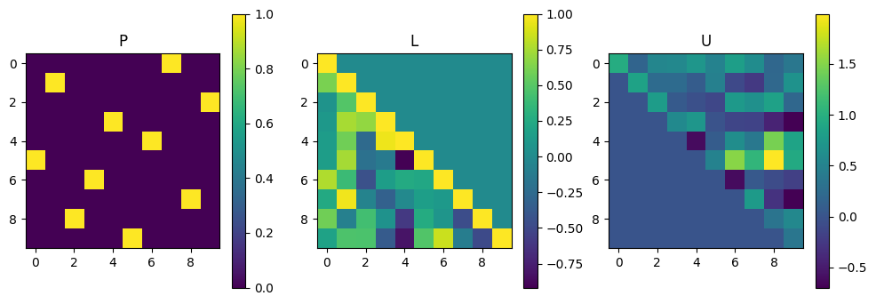
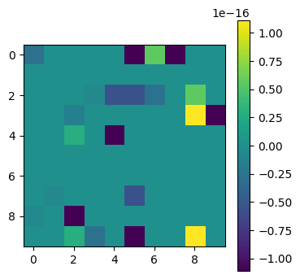
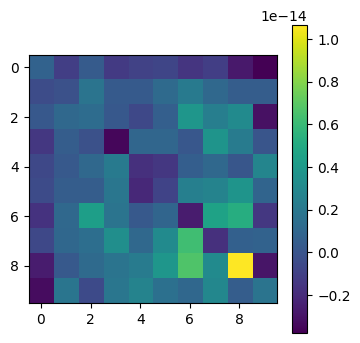
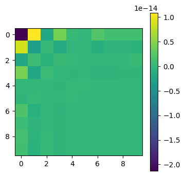
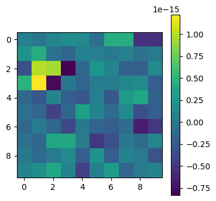
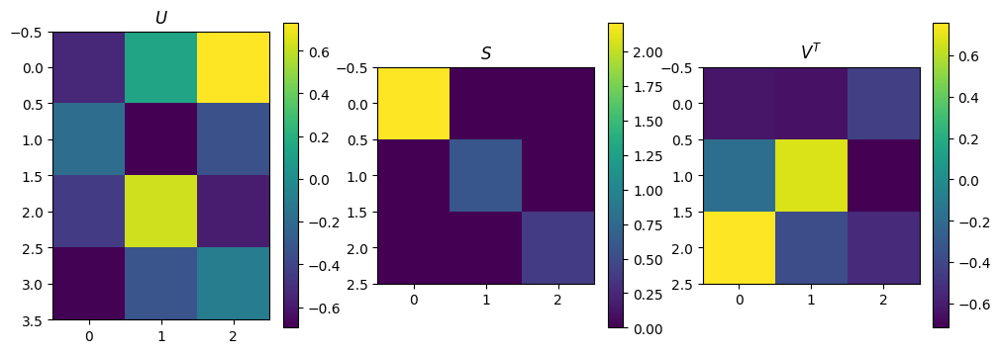
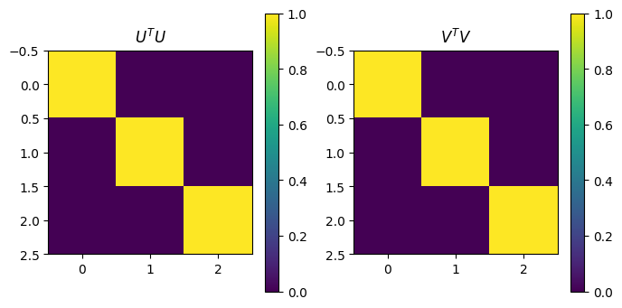
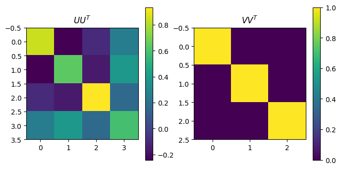
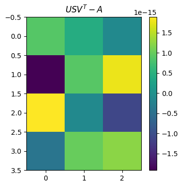

Matrices in numpy#
We’re going to be dealing with matrices quite a bit in this section, so let’s have a review of how numpy handles matrices.
import numpy as np
import matplotlib.pyplot as plt
---------------------------------------------------------------------------
ModuleNotFoundError Traceback (most recent call last)
Cell In[1], line 1
----> 1 import numpy as np
2 import matplotlib.pyplot as plt
ModuleNotFoundError: No module named 'numpy'
# Matrices are 2D arrays in numpy
# A[i][j] = ith row and jth column
A = np.random.rand(12).reshape(4,3)
print(A)
print(A[1])
print(A[1][2])
print(A[1,2])
[[0.58996059 0.75209993 0.48554225]
[0.01451209 0.44534224 0.61595936]
[0.82547514 0.31765441 0.44246308]
[0.07961245 0.8890647 0.85950299]]
[0.01451209 0.44534224 0.61595936]
0.6159593603590044
0.6159593603590044
# Can also use np.transpose(A) or A.T
A.transpose()
array([[0.58996059, 0.01451209, 0.82547514, 0.07961245],
[0.75209993, 0.44534224, 0.31765441, 0.8890647 ],
[0.48554225, 0.61595936, 0.44246308, 0.85950299]])
# Matrix multiplication uses the @ operator
y = np.array((1,2,3))
A@y
array([3.5507872 , 2.75307464, 2.7881732 , 4.43625082])
# Diagonal matrix
np.diag((1,2,3,4))
array([[1, 0, 0, 0],
[0, 2, 0, 0],
[0, 0, 3, 0],
[0, 0, 0, 4]])
# Inverse
np.linalg.inv((np.diag((1,2,3,4))))
array([[1. , 0. , 0. , 0. ],
[0. , 0.5 , 0. , 0. ],
[0. , 0. , 0.33333333, 0. ],
[0. , 0. , 0. , 0.25 ]])
A = np.random.rand(4).reshape(2,2)
B = np.linalg.inv(A)
B@A
array([[ 1.00000000e+00, -2.14543919e-17],
[ 2.01744311e-17, 1.00000000e+00]])
# Determinant
print(np.linalg.det(A))
print(A[0,0]*A[1,1] - A[0,1]*A[1,0])
0.2094998874032031
0.20949988740320313
# should be 1 * 2 * 3 * 4 = 24
np.linalg.det(np.diag((1,2,3,4)))
23.999999999999993
Matrix decompositions#
# We need scipy.linalg for eigenvalues
import scipy.linalg
# Visualize matrices as a color map
def plot_matrices(A,titles=[]):
n = len(A)
if titles==[]:
titles = [""]*n
if n>4:
nx = 4
else:
nx = n
for j in range(int(np.floor(n/4))+1):
plt.clf()
plt.figure(figsize=(nx*4,4))
jmax = 4*(j+1)
if jmax > n:
jmax = n
for i,AA in enumerate(A[4*j:jmax]):
plt.subplot(1, nx, i+1)
plt.imshow(AA)
plt.colorbar()
plt.title(titles[4*j + i])
plt.show()
LU decomposition#
A = np.random.rand(100).reshape(10,10)
P, L, U = scipy.linalg.lu(A)
plot_matrices([P, L, U], titles=["P", "L", "U"])
plot_matrices([P@L@U - A])
<Figure size 640x480 with 0 Axes>

<Figure size 640x480 with 0 Axes>

Eigen-decomposition#
The eigenvectors of an \(n\times n\) matrix \(\mathbf{A}\) satisfy
with eigenvalues \(\lambda_i\). Now consider the matrix \(Q\) whose columns correspond to the \(n\) eigenvectors \(\mathbf{v_i}\): you can easily show that this satisfies
where \(\mathbf{\Lambda} = \mathrm{diag}(\lambda_1, \lambda_2\dots \lambda_n)\).
Therefore
which is the eigendecomposition of the matrix.
Since \((\mathbf{A}\mathbf{B}\mathbf{C})^{-1} =\mathbf{C}^{-1}\mathbf{B}^{-1}\mathbf{A}^{-1}\), the inverse of the matrix is
where
# real symmetric matrix
n = 10
A = np.random.rand(n*n).reshape(n,n)
A = 0.5*(A + A.T)
A = A + np.diag(np.arange(n))
lam, Q = scipy.linalg.eig(A)
lam = np.real(lam)
Q = np.real(Q)
print("Eigenvalues=", lam)
print("Eigenvector check:")
for i in range(n):
# The eigenvectors are given by the columns of Q, ie. Q[:,i]
print(i, np.max(np.abs(A@Q[:,i]-lam[i]*Q[:,i])))
Eigenvalues= [11.0675444 0.2182113 1.47388007 2.06970305 2.77897892 8.6318886
7.42227103 6.32106408 5.38847361 4.5197732 ]
Eigenvector check:
0 9.769962616701378e-15
1 3.804248582817138e-15
2 2.8171909249863347e-15
3 2.831068712794149e-15
4 4.884981308350689e-15
5 7.105427357601002e-15
6 3.1086244689504383e-15
7 6.217248937900877e-15
8 2.6645352591003757e-15
9 1.5543122344752192e-15
# Check eigendecomposition
plot_matrices([Q@np.diag(lam)@np.linalg.inv(Q) - A])
# and the inverse
plot_matrices([Q@np.diag(1/lam)@np.linalg.inv(Q) - np.linalg.inv(A)])
<Figure size 640x480 with 0 Axes>

<Figure size 640x480 with 0 Axes>

plot_matrices([np.linalg.inv(Q) - Q.T])
<Figure size 640x480 with 0 Axes>

Singular value decomposition (SVD)#
The singular value decomposition (SVD) of a \(m\times n\) matrix \(\mathbf{A}\) is
where
\(\mathbf{U}\) is an \(m\times n\) matrix with orthonormal columns
\(\mathbf{S}\) is an \(n\times n\) diagonal matrix whose diagonal elements are the singular values of the matrix \(s_i\)
\(\mathbf{V}\) is an \(n\times n\) orthogonal matrix (\(V^TV = VV^T = 1\))
If we have a square matrix (\(m=n\)), we can write the inverse as
m=4; n=3
A = np.random.rand(m*n).reshape(m,n)
U, Sdiag, VT = np.linalg.svd(A, full_matrices=False)
print("Singular values are: ", Sdiag)
S = np.diag(Sdiag)
plot_matrices([U, S, VT], titles=[r"$U$", r"$S$", r"$V^T$"])
# U and V should be orthogonal
plot_matrices([U.transpose()@U,VT@VT.transpose()], titles=[r"$U^TU$",r"$V^TV$"])
plot_matrices([U@U.transpose(),VT.transpose()@VT], titles=[r"$UU^T$",r"$VV^T$"])
# Check the reconstructed matrix
plot_matrices([U@S@VT - A], titles=[r"$USV^T - A$"])
Singular values are: [2.20405693 0.59132211 0.38046252]
<Figure size 640x480 with 0 Axes>

<Figure size 640x480 with 0 Axes>

<Figure size 640x480 with 0 Axes>

<Figure size 640x480 with 0 Axes>
